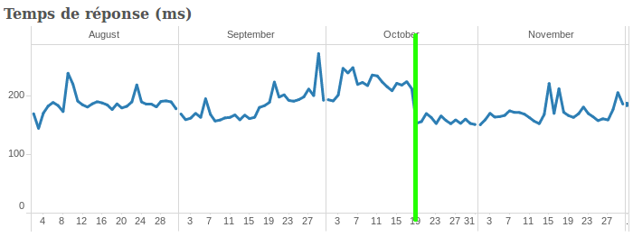

Depuis quelques jours, le site web mappy.com est entièrement servi par node.js.
Historiquement sous PHP et Symfony 2, une stratégie de migration a été mise en place pour migrer les serveurs web, page par page, vers node.js et express.
Le site Web Mappy
Mappy est une « single page application » qui se compose en 2 parties :
-
une partie serveur, composée de pages HTML et de feuilles de style, majoritairement dédiées aux moteurs de recherche (SEO), afin de leur présenter les informations accessibles via l’application Web cliente,
-
une partie cliente composée de JavaScript et s’exécutant dans le navigateur qui permet d’ajouter toute l’interactivité au site (notamment les interactions avec la carte, ce qui évite les rechargements de page après action de l’utilisateur).
Ces parties serveur et cliente font appel aux nombreuses APIs REST de Mappy afin de répondre aux besoins des internautes : service de recherche, de suggestion, de points d’intérêt (comme les commerces, hôtels, restaurants, etc), de calculs d’itinéraires, de statistiques, etc. Ces services sont écrits dans différents autres langages adaptés à chacune de leur problématique (et ne seront pas traités dans le cadre de cet article).
Site sans JavaScript activé (pour le SEO)
Site avec JavaScript (pour les internautes)
Avant la migration node.js
Le site Mappy est une application Web composée d’environ 20000 lignes de code de JavaScript (sans compter les librairies) côté client (ou navigateur) et environ 11000 lignes de PHP côté serveur (toujours sans compter les librairies).
Le site utilise également des templates au format twig, à la fois via le code JavaScript et PHP.
Pourquoi node.js ?
La volonté de migrer le code PHP vers JavaScript s’est faite pour principalement 3 raisons :
1. Même paradigme entre code client et code serveur
JavaScript est un langage asynchrone avec un système d’héritage par prototype alors que PHP est un langage procédural avec un système d’héritage orienté classe.
Certaines fonctionnalités devant à la fois être disponibles côté client et à la fois côté serveur, il est nécessaire de les développer 2 fois de façon relativement différente.
2. Code partagé
Pour permettre le partage de code, nous avons, il y a quelques temps déjà, adopté CommonJS pour notre code JavaScript client.
CommonJS est un système de chargement de dépendances, utilisé par node.js.
Nous utilisons browserify pour traduire nos fichiers au format CommonJS en un fichier JavaScript compréhensible par le navigateur.
Environ 20 à 25 % de code est maintenant partagé, utilisé à la fois par le serveur et le client (exemple sur les pages de point d’intérêt, itinéraire, etc).
Une conséquence de cela est une plus grande cohérence dans le comportement entre le serveur et le client (même traitement, même présentation des données).
3. Recrutement facilité
En éliminant PHP de l’équation, le recrutement est facilité puisque nous ne recherchons que des experts en JavaScript (avec de bases solides en CSS, HTML, performances web, GNU/Linux, puppet, etc).
Vous pouvez d’ailleurs consulter notre page sur RemixJobs si vous êtes intéressé.
Après la migration vers node.js
A l’issue de la migration, le code est toujours de 20000 lignes de code côté client mais une partie d’entre elles sont partagées par le serveur (modèles et collections Backbone notamment).
Le code côté serveur n’est plus que d’environ 8000 lignes (sans le code partagé).
Impacts sur les temps de réponse
On constate un gain du temps de réponse moyen d’environ 10 % sur l’ensemble des pages du site.
Les pages consommant le plus d’appels aux services REST montrent le plus gros gain (comme l’affichage des pages présentant les points d’intérêts par exemple).
C’est assez logique, node.js étant particulièrement adapté aux multiples entrées / sorties (réseau ou disque) de par son côté asynchrone non bloquant.
Ci-dessous un exemple des temps de réponse moyen des pages présentant les points d’intérêts avant et après la migration vers node.js (séparée par la ligne verte) :

Conclusion
La migration vers node.js est un succès.
Tout d’abord, l’objectif de migration transparente a été complètement respecté. Il n’y a eu aucun impact négatif, ni pour les internautes, ni pour les performances SEO.
Enfin, il est maintenant beaucoup plus facile d’intervenir sur le code serveur et le développement de fonctionnalités communes est plus rapide.
Le seul inconvénient de cette migration « douce » est qu’elle s’est étendue sur plusieurs mois et donc a été relativement longue (les pages migrées ont été mises en ligne au fur et à mesure, en vérifiant l’absence d’impact négatif à chaque mise en production).
Et après ?
Symfony utilisant twig comme moteur de template par défaut, tous nos templates sont dans ce format, soit environ 30000 lignes de code.
Nous utilisons d’ailleurs twigify pour les utiliser via browserify.
Twig étant une technologie issue du monde PHP, elle n’est pas très adaptée à JavaScript.
Par conséquent, l’un de nos futurs chantiers technique est l’étude d’un successeur (mustache, jade, react ?) suivi de la migration des templates.
Nous espérons à nouveau un gain de performances lié à cette migration, notamment en abandonnant l’héritage au sein des templates.